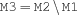
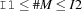

7.1 Finite Set Intervals
-
inf FS.infAn integer constant that denotes the smallest possible element of a set. Its value is implementation-dependent. In Mozart
FS.infis 0.-
sup FS.supAn integer constant that denotes the greatest possible element of a set. Its value is implementation-dependent. In Mozart
FS.supis 134 217 726.-
compl {FS.compl $M1 $M2}
-
complIn {FS.complIn $M1 $M2 $M3}
-
include {FS.include +D *M}-
exclude {FS.exclude +D *M}
-
card {FS.card *M ?D}-
cardRange {FS.cardRange +I1 +I2 *M}
-
isIn {FS.isIn +I *M ?B}
-
makeWeights {FS.makeWeights +SpecW ?P}Returns a procedure with signature
{P +I1 ?I2}. This procedure maps an element to a weight according to the weight description passed toFS.makeWeights.